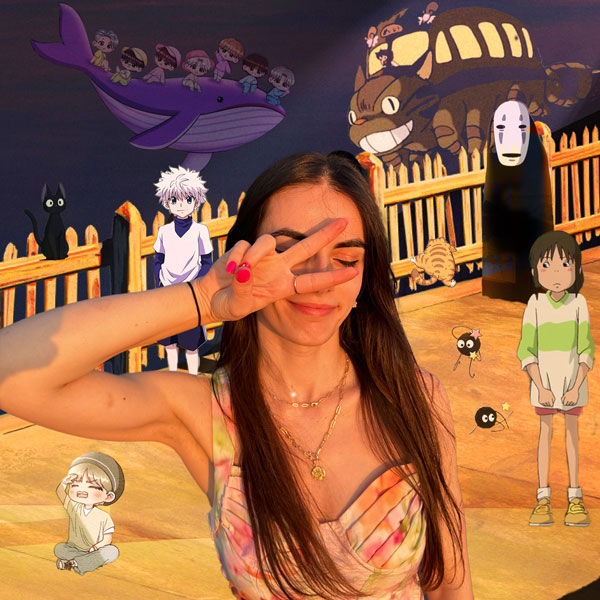
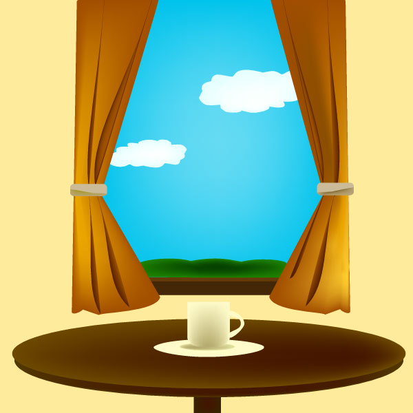

My self portrait
For this image, I used Photoshop. I chose a sunset background from Studio Ghibli. I added a photo of myself kissed by the sun to match it. I chose this because I love sunsets. Then I added randomly some of my favorite characters. Also there is my favorite artist, BTS, presented on a drawing as chibis on top of a whale. I applied layer masks for each characters and filtered with brightness and effect for the ones needed.
Wine and Grapes
I created a vector image using shapes in Adobe Illustrator. I created a group with the grape layers and another group of the glass of wine layers. I love red wine a lot, so I created this siple logo.
Coffe Time
I used Adobe Illustrator. I created three groups of layers: the window, the table, the coffee cup. I colored and I tried to make shadows. Drinking coffee is my favorite time of the day.
Joe Hendry's Entrance in the House Of Glory
I went to a wrestling event here in NY, in a nice venue in Queens, where I go often. but in this one, Joe Hendry was coming and I love his intro, so I decided to record audios while I was there, and I created a simple entrance audio, with details and phrases of his added to eat, and also voices of friends talking in the background in the show, being excited to see him live there. For this project, I used Audicity, I imported teh audios I took and others I downloaded from youtube, I cut and put them in the order I needed and then I used effects like fade, pitch and delay.
Sun watching the clouds leave
For this GIF, I used Adobe Photoshop. I created the layers and work the timeline.
The Rabit and the Fox
I used Adobe After Effects and created a small animation.
Cat meow
Copyright © 2024 Dasilda Lekaj - All Rights Reserved